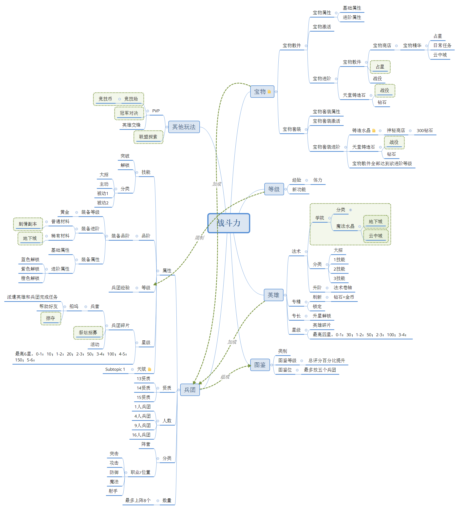
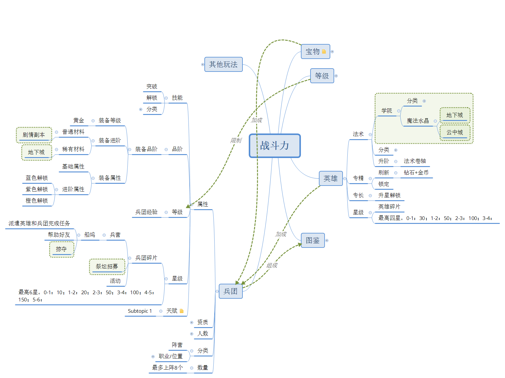
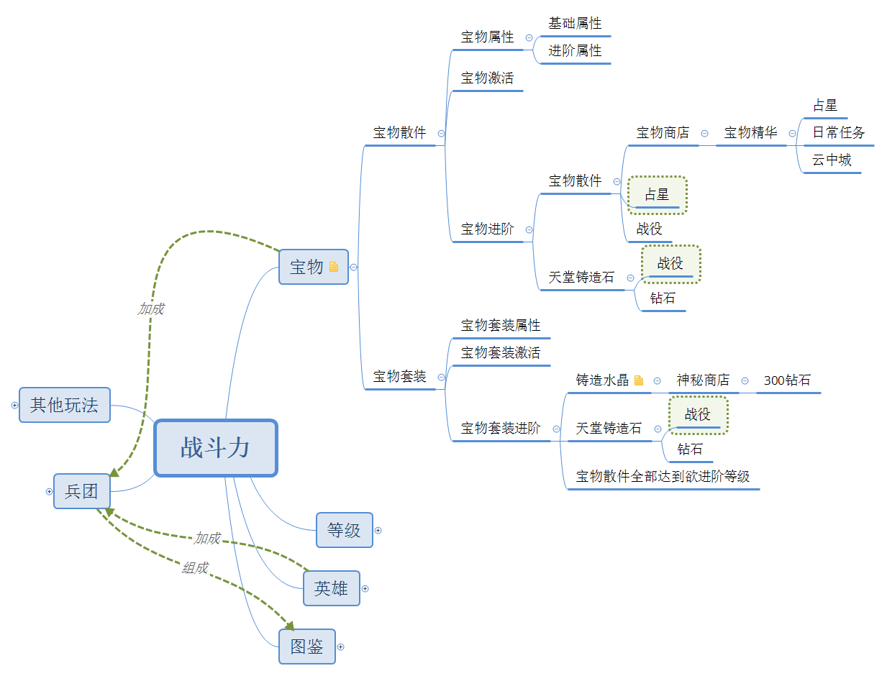
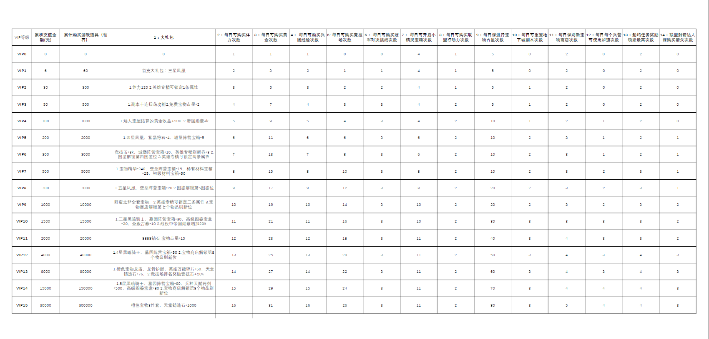
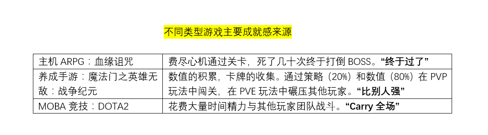

《魔法门之英雄无敌：战争纪元》是一款育碧授权、玩蟹科技研发、腾讯代理的“英雄无敌”同名改编手游，于2017年6月20日上线。本人体验近10天，充值680元左右，借此做一个简单分析：

1 玩法简介
战争纪元是一款典型的MMORPG手游，其核心是数值养成与卡牌收集，以战斗力体现养成进度，主要游戏系统有等级、英雄、兵团、图鉴、宝物等，主要战斗方式包括闯关等PVP玩法、竞技场等PVE玩法，简单呈现如下：
2 战斗方式
战斗的核心是英雄+兵团。通过战前布阵，可以选择上场的英雄和兵团，并在4*4方格中安排最多8个兵团的位置。
不同兵团的效果、兵团与兵团或兵团与英雄间的搭配、针对敌人布阵或猜测敌人布阵是本作最大的亮点，在数值相差不大的情况下，策略变得比较重要。
比如，PVE玩法中，某个章节的闯关BOSS需要特殊兵种的搭配；PVP玩法中，系统将不同玩家的数值平衡（或者相对平衡），营造出相对公平的竞技环境，此时布阵就成了竞技元素。

在战斗过程中，玩家无法控制兵团的移动，但是可以控制英雄释放技能，营造即时战斗的紧张感。

3 体力与等级
提升人物等级可以解锁上阵兵团数、兵团装备等级上限以及其他游戏功能。和大部分国产手游一样，《战争纪元》通过体力来限制玩家的等级提升。升级所需经验来源有两方面：完成日常任务及消耗体力。
日常任务完成经验：760 ;侯爵+10%，公爵+10%,大公+10%，亲王+10%，国王+10%，最多50%。
爵位：玩家完成每日任务或其他活动获得特权点，特权点能够升级爵位，解锁新的特权，提升每日薪水。
相当于游戏天数越多，所获取游戏资源的速度越快。
体力：
- 初始120，子爵体力力上限+30，公爵体力上限+30，大公体力上限+30，国王体力上限+30。最多240上限。
- 一小时回复十点体力，初始体力回满12h，240体力回满24h。
- 等级提升后体力+40
- 好友赠送可领取60
- 每日中午下午晚上可领取，12:00，120点，伯爵+30；18:00，60点，勋爵+15；20:30，60点，男爵+15
- 购买体力120点，次数上限=VIP等级+1
- 1点体力消耗=1点经验获取
每日获取经验上限=760×(1+爵位加成)+600+升级次数×40+（VIP等级+1）×120
升级所需经验递增，39-40所需经验约1000，46-47所需经验约2000，排行榜前列玩家等级相差不大。
可以看出，每日获取经验有一定上限，而不同VIP等级的升级速度差异巨大，购买钻石消耗为50，50，100，100，200，200递增，据说一个VIP15玩家每日购买16次体力花费钻石就超过1万，而充值一万钻石花费在1000元左右。
4 英雄与兵团
英雄与兵团是战争纪元里的主要收集与养成对象。在成熟的阵型中，英雄的专精决定阵型的流派以及搭配的兵种。
目前共有14位英雄，一场战斗只能上阵一位，但是每收集一位，都能增加总加成，还有些英雄的专场，即使不上阵也能生效。
英雄共有四种属性：法术、专长、专精、星级，皮肤功能可以改变账号头像和英雄外观，此外还有传记功能，5个小关卡，通关后可以获得钻石、英雄专属皮肤等奖励。
法术即战斗中可以释放的主动技能，消耗法术卷轴升级，此外在学院中，消耗魔法水晶可以提升法术效果；专精是随机刷新的英雄被动技能，共四条。消耗钻石与金币可以刷新，VIP可以锁定好的专精，只刷新想换的专精，分别于VIP2、6、9解锁“锁定1/2/3条专精”。
在前期，好的专精对英雄战力的影响较大，因此锁定专精就比较有用。
英雄的专长即对一个相关兵团的加强效果，共有四种，分别在1/2/3/4星级解锁，一定有一个效果英雄不上场依然有效。
英雄初始1星，最高4星，升级所需碎片获取很难，开服30天，排行榜前几名的玩家所用英雄还有没到四星的。

兵团的属性非常之多，主要有技能、品阶、等级、星级、天赋等，兵团的碎片获取很多，但花费钻石祭坛召唤是不受限制的。兵团满六星后，多余碎片可以用于天赋觉醒。
前期，培养兵团需要消耗大量的游戏资源。高资质的兵团（比如枯木巨人）战力也会比普通兵团（僵尸）高上很多，但其碎片收集的难度也就大了很多。
5 宝物系统
在兵团差不多的情况下，宝物系统对战斗力的影响非常之大。开服二十余天，全服第一的战力已经到170w，其中8个兵团平均战力8万，英雄战力9万5，宝物战力88万——占到了战力总和的一半。

紫色和橙色的宝物，单个就能带来数千的战力加成，凑成一套后更有特殊效果。此外，所有宝物的升级，都要消耗大量的铸造石（来源战役玩法、购买等）及宝物散件，而且宝物阶级越高。因此，追求高战力的玩家，
每日必须花光占星次数（依VIP等级提升），以获取最多的宝物。开服活动、每周活动也都会奖励高阶的宝物，达成任务条件也都需要大量的时间与金钱投入。
6 VIP与充值
通过前文我们已经了解到，VIP等级对本作的影响非常之大。VIP等级主要特权如下：

（右键在新窗口中打开查看大图）
假设开服初期，玩家投入时间都饱和,则会根据充值的金额，在升级速度、战力成长速度等方面自动分层，而且，充值VIP的带来的特权（如体力购买、占星次数购买）又需要消耗更多的钻石，
其消耗远比充VIP所得的钻石来得多。有位大R玩家这么说：
这个游戏v15不过打底罢了
光抽军队 把阵上所有军队升到六星 差不多刚好三万块钱 其次明天抽宝物1.4万钻石 每日体力购买体力v15买满16次也要个过万钻石 再说行动了购买 云中城次数购买 天堂石购买
零零总总算下来 每天不花个三四万钻石 休想保证全区第一
暂时理解为开区前七日的疯狂
一天三千块
一周算上v15 总共五万块
然后后面提升的就慢了 不是狠砸钱都看出有啥说啥变化
@俺是全村人的希望
7 总结
简而言之，《战争纪元》是一款典型的国产重度氪金手游，经典IP的改编给它带来了人气；腾讯发行给它带来了渠道；布阵、英雄兵团搭配、联盟探索等玩法给其带来了比较多的可玩性，开服期玩家每天起码得保证三四个小时的投入；而典型的战斗力积累系统及完善的VIP等级体系、开服活动、日常活动、冲级活动、更新活动等，让玩家前赴后继地投入精力和金钱——尤其是对网游格外重要的大R。
目前，该游戏已经居APP Store畅销榜第10名，估计月流水在千万到亿级之间。
这一类的免费手游，其本质是不充钱很难玩下去，笔者充值了648体验，在开服初期升级闯关不可谓不“爽”，其快感迅速而多样：开橙色宝物、抽三星兵团、满星过闯关、竞技场自动战斗虐前面的人一路往上升排名…..真的可以说是一天时间做到了不充钱玩家一周才能完成的积累。难怪会有如此之多的人愿意往手游里氪金。而只要游戏还能盈利（比如《乱斗西游2》），游戏开发者就会不断添加新功能、新玩法，以确保玩家不断投入。
从游戏设计的角度看，我们可以这样比较《战争纪元》等卡牌手游、MOBA网游、主机游戏的核心玩法：

很明显，由于玩家群体的分层，大部分玩家没有能力也没有精力在电脑或主机前坐上大半天，而手游拿起手机就能玩，充多少钱就能玩得有多爽。但也正因如此，其快感很容易消退，尤其是在不能保证每天时间金钱投入或者投入过多感觉厌倦的情况下。
但这时，游戏已经开了几十上百个新服务器、各种宣传渠道里的新游戏也已经铺天盖地的来了。
此文为个人对该手游的初步分析，仅代表个人观点，无立场性。